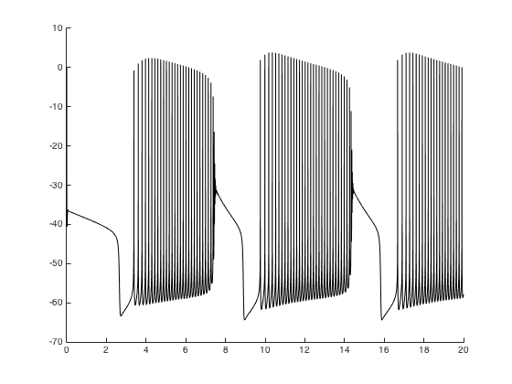

This is the readme for the matlab model associated with the paper: Yu N, Canavier CC (2015) A Mathematical Model of a Midbrain Dopamine Neuron Identifies Two Slow Variables Likely Responsible for Bursts Evoked by SK Channel Antagonists and Terminated by Depolarization Block. J Math Neurosci 5:5 These files were supplied by Dr CC Canavier. Usage: Expand and start the matlab script by typing at the matlab command prompt: soma_bursting_driver After a short time you should see an image similar to Fig 4A in the paper: 